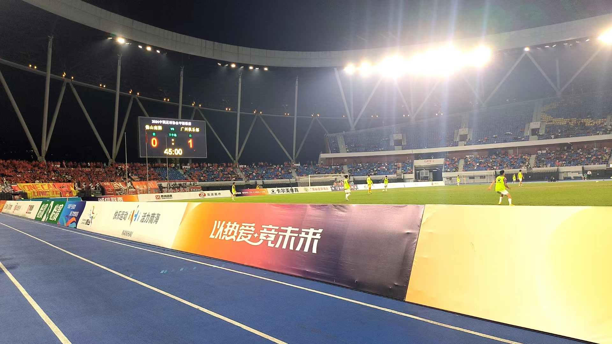
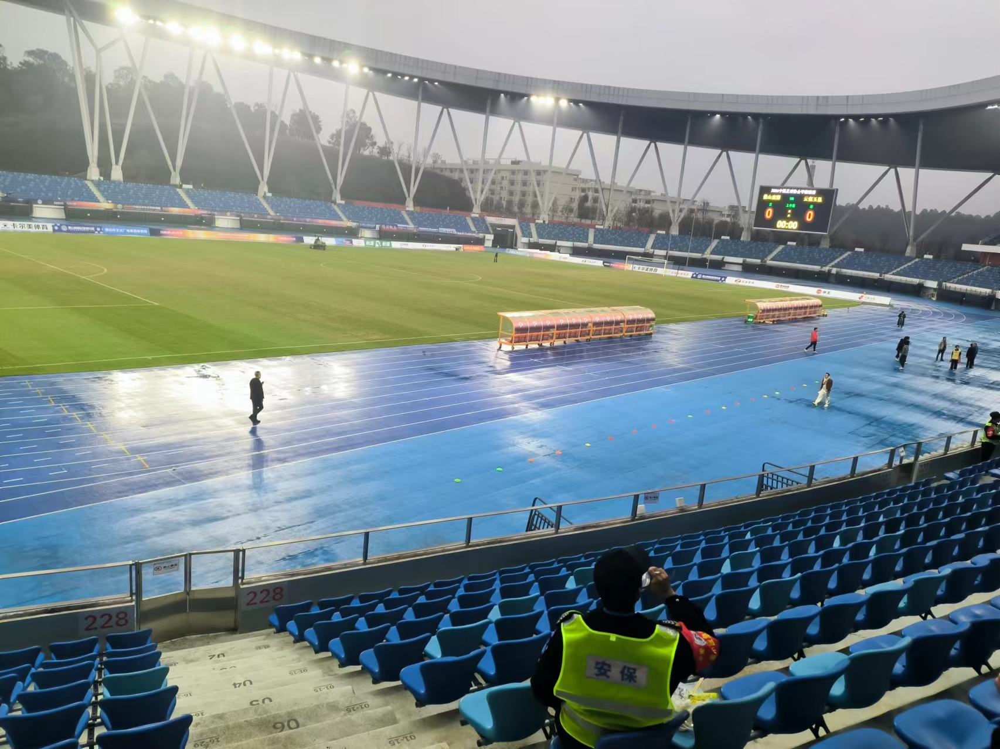

What about me?
Hello! My name is Cai Feiyang, and I am a student from the Aberdeen Data Science and Artificial
Intelligence School at South China Normal University, majoring in Artificial Intelligence. As a
university student majoring in computer-related fields, having an aesthetically pleasing personal
website is essential, which is why this website came into existence. On the about page, you can learn
about my academic performance, hobbies, and some experiences in my life! I will persist in updating this
webpage!
About academic performance
As a sophomore, I am deeply passionate about computer science. I have participated in the GPLT team
programming competition and have the experience of competing in the ladder tournament. I have been
honored with a third-place award at the provincial level in the Lanqiao Cup competition and have been
involved in the development of WeChat mini-programs. Regarding English learning, I have passed the
English CET-4 and CET-6 exams and have achieved an IELTS score of 6.0. For me, I am not satisfied with
my achievements because I understand how high the standards are for an excellent programmer nowadays.
Therefore, I will continue to strive harder on my academic journey!
About football
I am an avid football enthusiast. Ever since the fourth grade of elementary school, I have fallen deeply
in love with this sport. Regrettably, I have never received systematic football training. After entering
university, I found that my ability to play football is far from the requirements to join the faculty
team, so I gradually gave up playing. However, I still have a great passion for watching football
matches. I am a super fan of Arsenal Football Club and have not missed any of their games since I
started university. Fortunately, although Arsenal's performance in the past few years was not
satisfactory, after I started university and had enough time to follow their matches, Arsenal gradually
entered the championship ranks. Now they are the second most valuable team in Europe and the most
promising team for the future.
Figure 1: Arsenal captain Martin Ødegaard
Figure 2: Declan Rice and Kai Havertz
About journey
旅行一直是我生命中的一股清泉。自踏入大学校园的那一刻起，我逐渐意识到我的大学生活并不像预期中那般绚烂多彩。日复一日的学习和工作只让人感到生活的单调。
所以我选择出去看看这个世界，在路上，不为旅行，不因某人，只为在未知的途中遇见未知的自己。就像网络上流行的那句话一样：“青春没有售价，疯狂就在当下。”
我觉得我们就应该趁年轻出发，而不是等到老了走不动才来叹息自己没有好好地看看这个世界。
所以，我选择出发，去旅行，去见识这个世界的广阔与奇妙。我相信，通过旅行，我能够重新点燃对生活的热爱，找到那份久违的激情和灵感。因为我知道，生活不仅仅是眼前的书本和屏幕，还有诗和远方。
Travel has always been a refreshing spring in my life. Since stepping into the university campus, I
gradually realized that my college life is not as colorful as I expected. The monotony of day-to-day
study and work only makes one feel the dullness of life. Therefore, I choose to go out and see the
world, on the road, not for travel, not because of someone, but to meet the unknown self on the unknown
journey. Just like the popular saying on the internet: "Youth has no price, and madness is in the
present." I think we should take off when we are young instead of waiting until we are old and unable to
walk to sigh that we have not taken a good look at the world. Therefore, I choose to set out, to travel,
to see the vastness and wonder of the world. I believe that through travel, I can reignite my passion
for life and find the long-lost inspiration and passion. Because I know that life is not just about the
books and screens in front of us, but also about poetry and distance.
Here are some photos I took during my journey.
Figure 3: Mount Hua in January
Figure 4: Panoramic view of Double-Moon Bay
About social practice
In my daily life, despite having limited time, I still participate in some small social practice
activities, such as school volunteering and competition volunteering. The most special volunteer
activity was when I served as a ball boy during the Chinese Football Association China League match
between Foshan Nanshi and Guangzhou teams in the Guangdong Derby. I was responsible for picking up the
ball for the players on thefield and had the exciting opportunity to be in close contact with the
players. Here are some photos ofthis volunteer activity.


 阿森纳 Arsenal
阿森纳 Arsenal